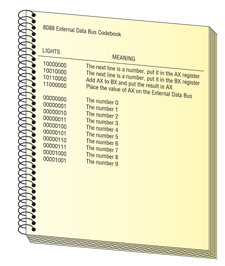

Question 1
Perform the following binary additions:
101 + 11 =
111 + 111 =
1010 + 1010 =
11101 + 1010 =
11111 + 11111 =
1000
1110
10100
100111
111110
Question 2
Convert the following numbers to binary and perform the operation:
(32)10 =
(50)10 + (32)10 =
(64)10 + (4)10 =
(100)10 + (220)10 =
10 0000
101 0010
100 0100
1 0100 0000
Question 3
Given the codebook below, write the binary instructions to perform this operation: (100)10 + (220)10 .

- What’s the final value on the External Data Bus?
1000 0000 (The next line is a number, put it in the AX register)
0110 0100 (The number 100)
1001 0000 (The next line is a number, put it in the BX register)
1101 1100 (The number 220)
1011 0000 (Add AX to BX and put the results in AX)
1100 0000 (PLace the value of AX on the External Data Bus)
0110 0100 + 11011100 = 1 0100 0000
Since the CPU’s bus size is limited to 8 bits, the most significant bit (left most, or highest power) will be lost.
The final answer on the ESD is: 01000000 = (64)
Question 4
What is -230 in two’s complement representation with an 12 bits bus width?
- Write 230 in binary:
1110 0110
- Complete the number of bits to 12 and add a bit for the sign:
0000 1110 0110
- Flip the bits (one’s complement):
1111 0001 1001
- Add 1 to get two’s complement:
1111 0001 1010
Question 5
Convert the following numbers to binary and perform the operation on an 8-bit CPU:
(50)10 - (32)10 =
(64)10 - (4)10 =
(100)10 - (120)10 =
- (50)10 - (32)10 = (50)10 + (-32)10
Binary 50:
0011 0010
Binary 32:
0010 0000
Invert 32:
1101 1111
Add 1:
1110 0000
Operation: 50-32 :
0011 0010 + 1110 0000 = 0001 0010
- (64)10 - (4)10 = (64)10 + (-4)10
Binary 64:
0100 0000
Binary 4:
0000 0100
Invert 4:
1111 1011
Add 1:
1111 1100
Operation: 64-4 :
0100 0000 + 1111 1100 = 0011 1100
- (100)10 - (120)10 = (100)10 + (-120)10
Binary 100:
0110 0100
Binary 120:
0111 1000
Invert 120:
1000 0111
Add 1:
1000 1000
Operation: 100-120 :
0110 0100 + 1000 1000 = 1110 1100 = (-20)10
Back to top